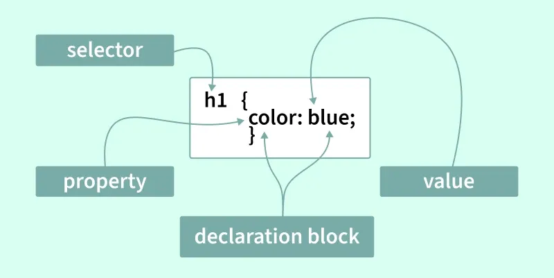

Introduction of CSS
Syntax
By using selectors to specify the elements you want to style, it simplifies the styling of html files.
Selectors can decide which elements to apply to based on type, id, class, etc. Its flexibility
allows more efficient and concise styling.
Details about different kinds of selectors.

Selectors
- Basic Selectors:used to target elements by html element names
- Universal Selector(*): apply to all elements.
- Element Selector: h1, p, etc.
- Class Selector(.): apply to a certain class. Different elements could be assigned with the
same class value while a single element could have multiple class values.
- ID selector(#): apply to the speific element with the unique id.
- Combinator Selectors:target elements by the hierarchy or position of differrent elements
- Descendant Selectors( ):target an element inside another.
- Child Selectors(>):target the direct child elements of a parent.
- Adjacent Sibling Selectors(+):target the elements immediately following the other.
- General Sibling Selectors(~):applied to all the elements following a specific element.
- Attribute Selectors:target elements based on the presence or value of certain attributes.
- Presence Selector:select elements with a certain attribute.
- Atrribute Value Selector:target elements with a particular attribute value.
- Substring Matching:matches elements where the attribute contains a specific substring,
and there are three forms of substring matching based on the start position of substring:
begin with(^=), contain(*=), end with($=).
- Pesudo-Classes:
pesudo-classes are the keywords used to define a specific state or condition of an element, such as
hoverd, focused, etc. Adding pesudo-class to a selector(selector:pesudo-class) enables to style elements
of special state.
- Pesudo-Elements:a
pesudo-elementb is a keyword referring to different parts of an element, such as the first line of a
paragraph. Adding pesudo-elements to a selector(selector::pesudo-class) allows to style different parts
of an element.